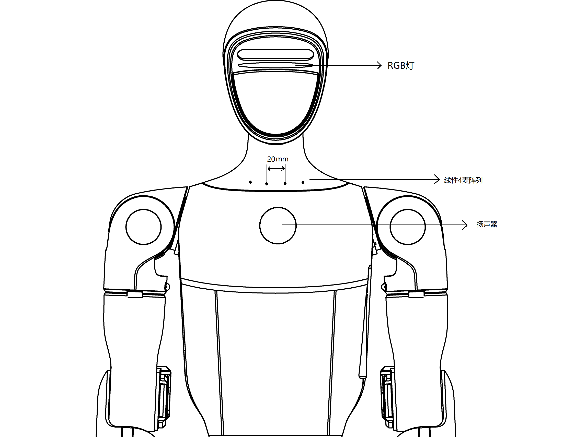

语音助手使用说明
G1设备已经接入GPT模型（固件版本≥1.3.0）。连接互联网后，开启语音助手对话模式，设备可支持基于GPT模型的语音对话（例如聊天、动作、音乐播放等）。

模式说明
G1支持两种对话模式：唤醒对话模式和按键对话模式。
切换方式：
- 遥控器：同时按
L1+L2 - APP: 【设备】-【数据】-【音频】-【语音助手】
注意！！！
- 所有模式都支持
L2+Select按键唤醒，L1+Select强制打断 。 - 未唤醒时听到人声会蓝灯呼吸，唤醒后收到指令会绿灯呼吸
唤醒对话模式:
唤醒词："笨笨同学"
特点：唤醒后可进行多轮自然对话。适用于较为安静的普通对话场景。
介绍：用"笨笨同学"进行唤醒，唤醒成功后，机器人会回复，随后可以进行多轮无限制的自由对话，超时15秒没声音后对话结束，需要重新唤醒。
按对话音模式:
特点：强制进行一次语音识别，适用于嘈杂环境。
介绍：无需唤醒词，同时长按L2+Select后开始录音, 松开L2+Select后结束录音。此阶段产生的声音会被强行识别并送给语音识别框架。
关闭交互
程序休眠，停止录音，关闭后即不会产生隐私问题。
提高识别成功率方法:
● 重要：麦克风正常收音会有呼吸灯闪烁，请善于利用此指示灯辅助。(如果说话的时候灯不闪烁，就是没录到音。此时需要靠近一点+检查模式+排查硬件)。
● 站在正前方(麦克风开孔方向)，距离1m内进行尝试。
● 扬声器在播放声音时，例如讲故事，放音乐。此时语音交互效果不佳，需要等待播放完成后才能进行下一指令，或者同时按L1+Select 进行打断。
问题排查:
1. 检查GPT是否可用
可按L2+Select进行一次唤醒，如果GPT未联网，会回复"你好，我在呢"，即进入离线语音交互模式。
2. 部分问题没反应或者有延迟。
检查GPT是否可用或者部分问题触发了联网搜索（例如问"今天天气如何"），跟网络环境有关系。